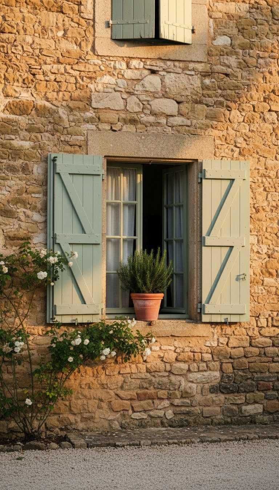
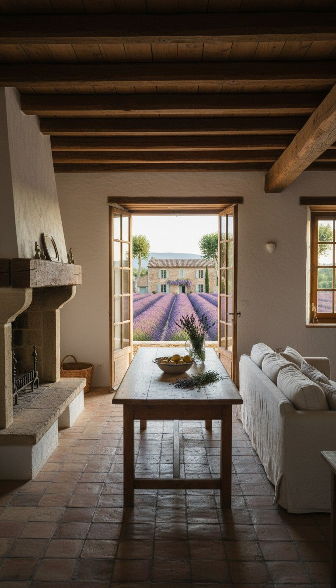

AI-generated concept home. Not a real property or product. It is not for sale or for rent. The products suggested below are real Amazon listings, chosen in the spirit of the house. The images on this page are AI-generated, not photographs of a real place.
You hear it before you see anything: gravel under your shoes, and the low hum of bees working the rows. The lane runs dead straight, pale and dusty, with lavender on both sides as far as you can look. The sun is low and coming in from the left, so every bush throws a long blue shadow across your path. There is no house yet. There is only purple, and gold, and a line of dark cypresses on the hill.
That is how this house wants to be met. Slowly, on foot, at the end of the day.
Some links on this page are Amazon affiliate links. We may earn a commission at no extra cost to you.
As an Amazon Associate I earn from qualifying purchases.
The lane, and the lavender
Lavender at golden hour does something strange to the light. The flower heads catch it from behind and glow at the edges, every tiny hair lit up, and the field beyond goes soft and blurry, like warm water. The air smells of it. If you brush the stems with your hand as you walk, your fingers smell of it for an hour.
We kept the house out of sight for this part on purpose. The best homes don’t greet you at the gate. They let you arrive.
Honey stone, shutters thrown open
Then the stone. The farmhouse, a mas in the old Provençal sense, is built of dry-laid stone the colour of honey, rough enough that the low sun finds every edge. The windows sit deep in the walls, which is what keeps a house like this cool in July. The shutters are an old, faded sage green, and they are folded right back against the stone, because nobody here closes anything before dark.
A pale climbing rose has found its way up one wall. There is a pot of rosemary on the sill, and a sheer linen curtain moving a little in the window. It is the kind of detail you only notice when you stop, and that is the point. This is a house you stop for.

Dinner is always outside
Beside the house, under a pergola heavy with grapevine, there is a long oak table set for ten. White linen, ceramic plates, carafes of rosé, bread, a bowl of apricots, and candles everywhere, each one in a glass hurricane so the evening breeze can’t touch the flame. Warm bulbs are strung through the vine overhead. The chairs are empty, waiting. Beyond the low stone wall, the fields and the hills keep glowing long after the sun has gone.
Nobody eats inside in a house like this, not from May to September. The table is where the day ends.
If you want a little of this at home, it is mostly linen and light. A long natural-linen cloth that falls past the table edge, a row of glass hurricanes down the middle, and a string of warm bulbs overhead will turn an ordinary patio table into the end of a long Provençal day.

EVERLY pure linen rectangle tablecloth, 60 × 120 in
Flax linen in a natural tone; the listing sizes it for a 6-foot table seating 10 to 12.
View on Amazon
CYS EXCEL footed glass hurricane candle holder, 8 in
Hand-blown clear glass on a short stem, for a pillar candle on an outdoor table.
View on Amazon
Brightown 100 ft outdoor string lights, ST38 LED bulbs
Warm Edison-style bulbs on an outdoor-rated, dimmable string; the listing states IP65 and UL.
View on AmazonInside, it is cool and calm
Step through the French doors and the temperature drops. The walls are thick stone washed in pale lime, the ceiling is crossed with old oak beams, and the floor is worn terracotta tile, smooth in the places where people have walked for a century. There is a big stone fireplace for the cold months, a long scrubbed wooden table with a bowl of lemons and a jug of lavender, and a linen sofa you sink into.
The French doors stay open all afternoon. The sun lies across the floor in long bars, and through the doorway you can see the terrace, the vines and the fields beyond. Inside and outside stop being separate things.

Every evening, you walk home through this
Then you’re back in the lane, still walking, and at last it comes into view: the house at the end of the purple, two plane trees and a tall cypress beside it, wisteria over the front door, lamplight just starting in a few windows. The reel saves this view for late, and it is the one we’d want to come home to every night.
And behind the house, a pool you can’t see from the lane
From the air, the whole place makes sense. The lavender runs in long parallel rows to every horizon. The pale lane cuts straight through it to the house. And behind the house, where no one walking up would ever guess, there is a stone terrace with a long pool of clear turquoise water, edged in pale limestone, closed in by low dry-stone walls, olive trees and cypresses.
It is the last surprise, and the best one. A swim at the end of the day, with the fields going violet around you.
Would you live here?
That is the question we ask at the end of every Dream Homes reel, and with this one, we already know our answer. Not because it is grand, but because it is easy to picture a life in it: coffee at the stone sill in the morning, a long lunch in the shade, dinner for ten under the vines, and a walk through the lavender before bed.
Tell us in the comments on the reel whether you’d move in, and which of the five dream homes this week is yours.
The images on this page and the reel’s visuals and voice are AI-generated. This is a concept home, not a real property.
The products above are our suggestions in the spirit of the house; they are not items shown in the reel. Product details: each linked Amazon.com listing, loaded 23 Nov 2026 (America/Toronto).